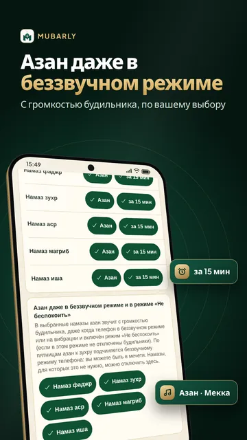
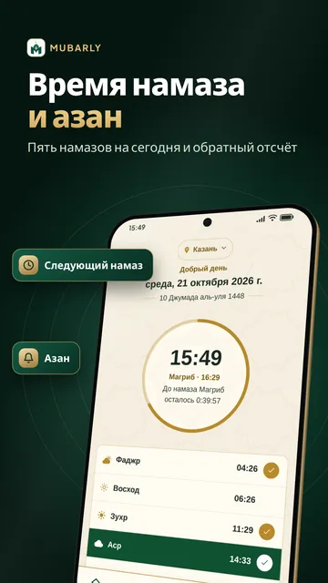
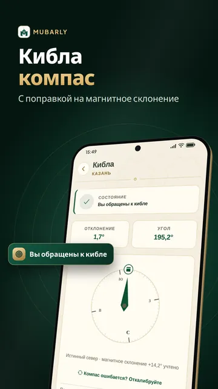
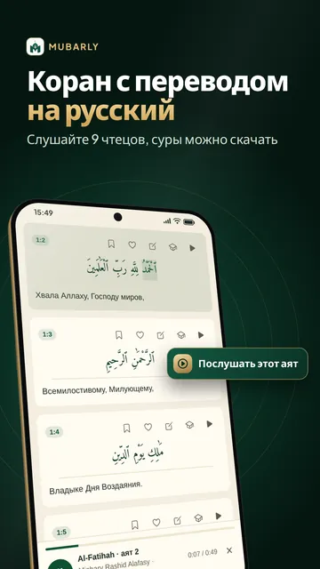
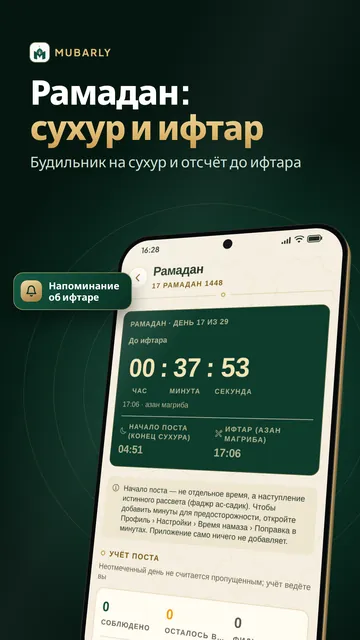
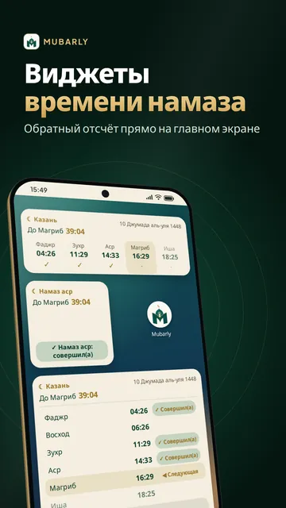
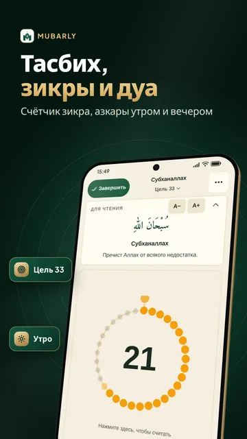
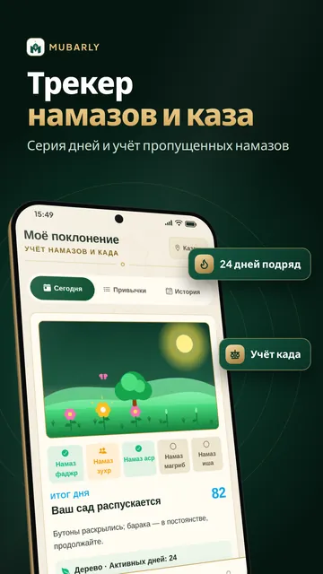

Азан даже в беззвучном режимеAndroid
Азан звучит с громкостью будильника в каждое время намаза, даже в беззвучном режиме и «Не беспокоить».
Азан с громкостью будильника, даже в беззвучном режимеAndroid
Азан-будильник даже в беззвучном режиме, кибла компас, Коран, дуа и тасбих
✓ Бесплатно✓ без интернета✓ 20 языков✓ четыре мазхаба


Mubarly
01
С громкостью будильника, по вашему выбору

02
С поправкой на магнитное склонение

03
Слушайте 9 чтецов, суры можно скачать
11 · Исламские руководства
21 · Время намаза по городам
Mubarly
Азан звучит с громкостью будильника в каждое время намаза, даже в беззвучном режиме и «Не беспокоить».
20 языков, в том числе хауса, сомали, курдский, пушту, панджаби, киргизский и узбекский.
Ханафитский, шафиитский, маликитский и ханбалитский: аср, пост и каза — по вашему мазхабу.
Время рассчитывается на телефоне по методу вашей страны. Без интернета и без аккаунта.
На экранах Корана, азана, киблы, зикра и дуа никогда нет рекламы, а Premium убирает всю рекламу.
Без фонового доступа к местоположению, камере и микрофону; ваши данные не продаются.
Mubarly
Mubarly рассчитывает время намаза для вашего города прямо на телефоне, а азан может звучать как будильник даже в беззвучном режиме; пошаговая настройка покажет, как настроить азан на телефоне, и предупредит, если он может опоздать. Кибла компас, Коран на русском, дуа и зикры.
Mubarly (Мубарли) — мусульманское приложение на каждый день: время намаза, кибла компас, Коран на русском, дуа, зикры и тасбих. Расписание намазов рассчитывается прямо на телефоне без интернета, а азан может звучать как будильник даже в беззвучном режиме. Подходит для всех четырёх мазхабов — ханафитского, шафиитского, маликитского и ханбалитского — и не требует регистрации.
Все разделы поклонения доступны всем бесплатно. Полноэкранной рекламы нет, а на экранах Корана, киблы, азкаров и счётчика зикра её нет совсем. Premium убирает всю рекламу и добавляет «Режим заучивания», «Сон и размышление» (звуки для сна, тасбих перед сном, дыхание) и дополнительные темы компаса и счётчика; после просмотра короткого видео весь Premium открывается на несколько часов.
Конфиденциальность: аккаунт не нужен (вход по желанию — для резервной копии и синхронизации); фоновая геолокация, камера и микрофон не используются. Mubarly не продаёт ваши данные.
Время намаза и азан




Mubarly
Да. Время намаза, азан, кибла, Коран, дуа и зикры бесплатны, а на экранах поклонения никогда нет рекламы. Необязательный Premium убирает всю рекламу и добавляет функции.
Да. Mubarly читает азан с громкостью будильника в каждое время намаза, даже в беззвучном режиме и режиме «Не беспокоить»; остановить его можно из уведомления.
На вашем телефоне, для вашего местоположения, методом, принятым в вашей стране. Метод и расчёт асра (ханафитский или другие мазхабы) можно изменить в настройках.
Всем четырём: ханафитскому, шафиитскому, маликитскому и ханбалитскому. Аср, пост, каза и другие правила следуют выбранному вами мазхабу.
Да. Время намаза, азан и текст Корана работают без интернета, аккаунт не нужен.
Бесплатно · без интернета · 20 языков · четыре мазхаба